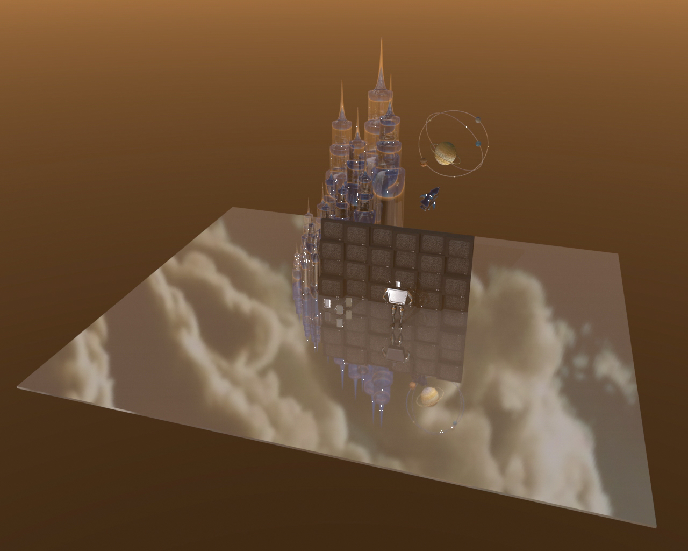
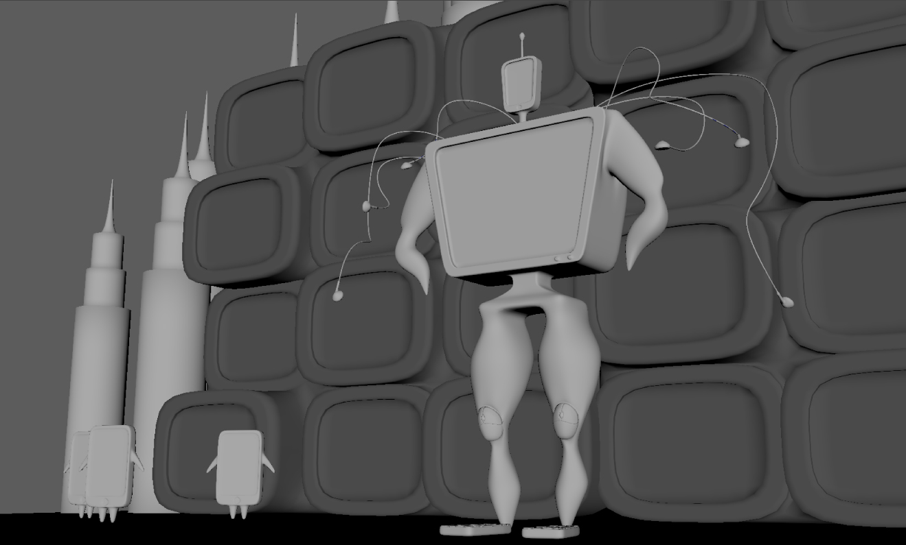

artist statement.
We live in a world of screens. The fine line between an individual’s identity on screen and in “reality” is no longer clear. Thus, as humans, we toil with this blurred line in search for a cohesive identity. With the tools available and the mask of a screen, fabricating perfect online identities comes with ease. However, at some point when every move we take and every choice we make becomes overwhelmingly dictated by the online "self" — we lose grasp of the “self" in reality. We live to act before the camera, only to become an extravagant show, worthy of jealousy from the public eye, but empty within.My work serves as commentary on how screens have dictated and transformed the human population in ways we’ve not imagined — in this case physically.
process.
When I first created this scene, I envisioned a robot composed of a phone, tv, keyboard, mouse, and earphones as my center piece. However, I wanted it to have tints of human features. Therefore, I created more human-like arms and legs.I wanted to portray my message viscerally through a robot human and its place in a complicated, futuristic world, surrounded by all types of technology. I chose to make most of the surfaces reflective both as a design choice to create interesting reflections and colors, but also embed a metaphorical call to action for the need to self-reflect. As I moved forward in creating a holistic scene, I decided to add small phone humans to represent the next generations who will never live without the presence of technology, and how they are impacted by technology since birth and childhood. Finally, I added a backdrop of TVs with glass towers and a space scene behind to build onto the futuristic look.
I lit the scene so the reflective surfaces could show interesting textures found on other surfaces but also reflect the world in which this models are set in. I placed an image of a sky in the dome to create these cloud reflections on the ground and added an aisky to create the sunset in the background.
ideation sketch.
Top, side, front, and perspective sketches during ideation process
modeling.

lighting and adding textures.
Fully lit, textured, and rendered scene, rendered with Arnold renderer.